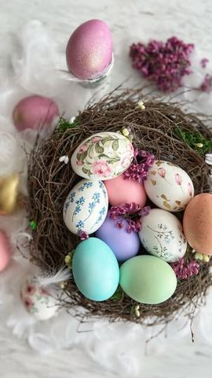

Moja beleška
SačuvanoOstavljam vam prošlogodišnji snimak za postupak i način na koji ja najviše volim da dekorišem uskršnja jaja 💓 Ne zato što je ovo neka nauka ili nešto što možda mnogi od vas već uveliko ne primenjuju, već zato što mi je mnooogo lepih poruka pristiglo na ovu temu, zato što ste bili oduševljeni prošlogodišnjim i zato što se uvek vodim time da je možda nekome baš prva godina da će jaja farbati sam 😍 •Pre svega, kada kuvam jaja, na dno šerpice postavim krpu, slažem jaja kojima sam pečat skinula tupferom sa malo sirćeta i sva jaja pre toga uvek lepo operem. Sipam mlaku vodu tako da prekrije sva jaja i kašičicu, dve soli. Posle 10ak minuta kuvanja dodam i jednu supenu kašiku sirćeta. Što se samog kuvanja tiče, prvo pustim da voda krene da vri, a onda jačinu podesim na 6 od 9 i kuvam ovako još 20ak minuta (poootpuno tiha vatra) Tako nećete imati bojazan da će jaja ispucati.
Sastojci
Priprema
•Kod dekupaža je najbolje da na vreme prikupljate salvete sa Uskrsnjim motivima ili prosto neke lepe cvetne. Moj savet je da to budu što sitniji detalji i da ih makazicama što bolje isečete. Na skuvana i prohladjena jaja belance nanosite četkicom, stavljate motiv sa salvete kome ste skinuli sve slojeve papira sem tog poslednjeg koji je u boji. Pređete cetkicom ivice i vaša jaja su gotova. Ubacite jaje, pa sačekate onoliko koliko zelite da boja bude intezivna. Prošle godine otkrila sam i akrilne boje na vodenoj bazi i to je jedan novitet za mene, boje su saaaavršene i mislim da ću se tek od sledeće godine ovim bojama zabavljati ☺️☺️☺️ Hoće li vam biti korisni ovi saveti ili ste ih već primenjivali..? Nadam se da sam nekima olakšala, možda dala ideju, neka ovo bude zabava, a ne opterećenje. Ne takmičimo se za najlepše jaje instagrama 🤗 Uključite i decu i zajedno starajte uspomene 🌸
Originalni opis sa Instagrama
Ostavljam vam prošlogodišnji snimak za postupak i način na koji ja najviše volim da dekorišem uskršnja jaja 💓 Ne zato što je ovo neka nauka ili nešto što možda mnogi od vas već uveliko ne primenjuju, već zato što mi je mnooogo lepih poruka pristiglo na ovu temu, zato što ste bili oduševljeni prošlogodišnjim i zato što se uvek vodim time da je možda nekome baš prva godina da će jaja farbati sam 😍 •Pre svega, kada kuvam jaja, na dno šerpice postavim krpu, slažem jaja kojima sam pečat skinula tupferom sa malo sirćeta i sva jaja pre toga uvek lepo operem. Sipam mlaku vodu tako da prekrije sva jaja i kašičicu, dve soli. Posle 10ak minuta kuvanja dodam i jednu supenu kašiku sirćeta. Što se samog kuvanja tiče, prvo pustim da voda krene da vri, a onda jačinu podesim na 6 od 9 i kuvam ovako još 20ak minuta (poootpuno tiha vatra) Tako nećete imati bojazan da će jaja ispucati. •Za pastelna i dekupaž tehnike biće vam potrebna bela jaja. •Kod dekupaža je najbolje da na vreme prikupljate salvete sa Uskrsnjim motivima ili prosto neke lepe cvetne. Moj savet je da to budu što sitniji detalji i da ih makazicama što bolje isečete. Na skuvana i prohladjena jaja belance nanosite četkicom, stavljate motiv sa salvete kome ste skinuli sve slojeve papira sem tog poslednjeg koji je u boji. Pređete cetkicom ivice i vaša jaja su gotova. •Za pastelna su vam dovoljne prehrambene boje, i recimo na 250 ml hladne vode i supena kasika sirćeta. Ubacite jaje, pa sačekate onoliko koliko zelite da boja bude intezivna. Prošle godine otkrila sam i akrilne boje na vodenoj bazi i to je jedan novitet za mene, boje su saaaavršene i mislim da ću se tek od sledeće godine ovim bojama zabavljati ☺️☺️☺️ Hoće li vam biti korisni ovi saveti ili ste ih već primenjivali..? Nadam se da sam nekima olakšala, možda dala ideju, neka ovo bude zabava, a ne opterećenje. Ne takmičimo se za najlepše jaje instagrama 🤗 Uključite i decu i zajedno starajte uspomene 🌸 • • • #uskrsnjajaja #uskrsnjadekoracija #pastelnajaja #dekupaz #vaskrs #vaskrsnjajaja #vaskrsnjadekoracija #idejezadekoraciju